703308 VO High-Performance Computing
University of Innsbruck
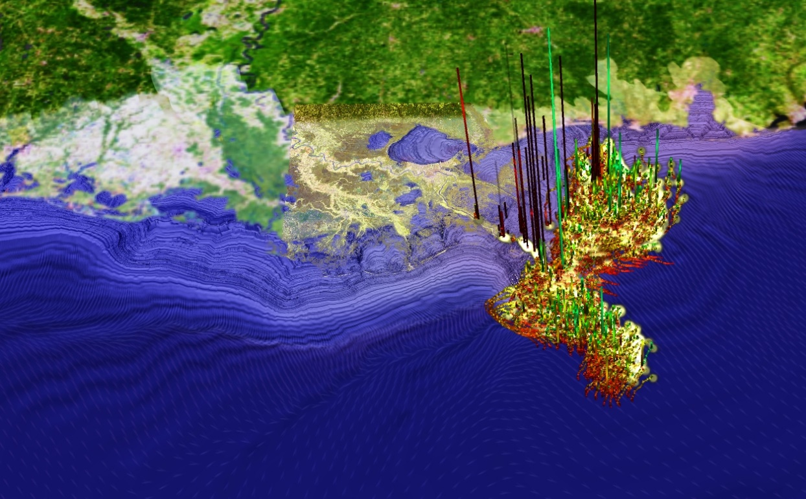
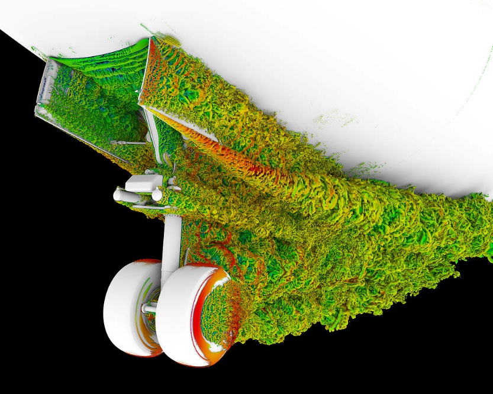
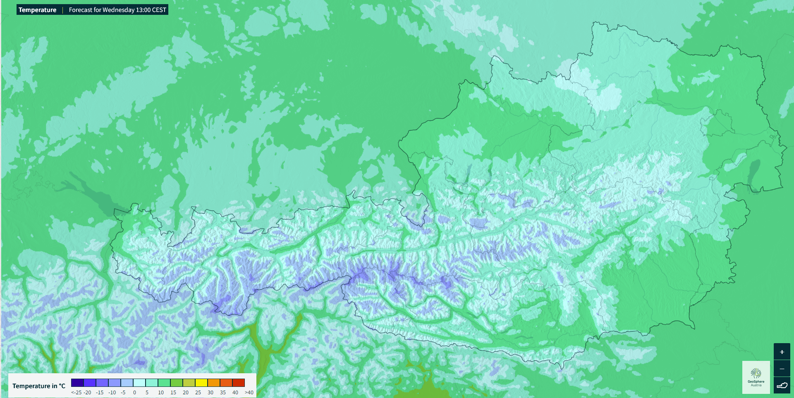
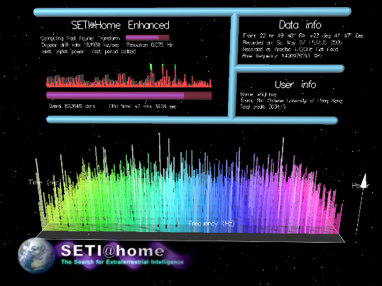
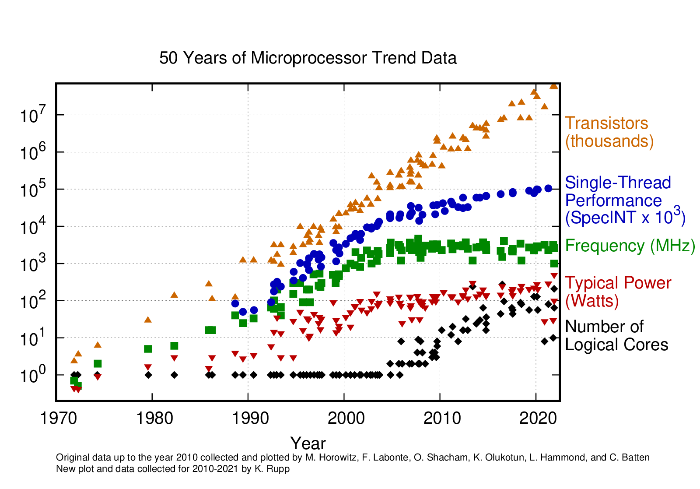
Ada, Akka.NET, Alef, Alice, Apache Beam, Apache Flink, Apache Hadoop, Apache Spark, Ateji PX, Axum, Bloom, BMDFM, C#, C*, C++, C++ AMP, C=, CAL, Chapel, Charm++, Cilk, Cilk Plus, Clojure, CnC, Coarray Fortran, Concurrent Clean, Concurrent Haskell, Concurrent ML, Concurrent Pascal, Constraint Handling Rules, Cpp, Crystal, CUDA, Curry, Cω, D, Dart, E, Ease, ECMAScript, Eiffel, Eiffel SCOOP, Elixir, Elm, Emerald, Erlang, Esterel, FAUST, Fork, FortranM, Fortress, Futhark, Glenda, Go, Golang, Haskell, Hermes, HPF, Hume, Id, Io, Janus, Java, JavaScript, JCSP, JoCaml, Join Java, Joule, Joyce, Julia, Kokkos, LabVIEW, Limbo, Linda, Lustre, Mercury, Millipede, Modula, MPD, MPI, MultiLisp, Newsqueak, Occam, Occam-π, OpenCL, OpenHMPP, OpenMP, Orc, Oz, ParaSail, Parlog, Perl, Pict, Pony, Preesm, Prolog, PyCSP, Python, Red, Reia, Ruby, Rust, SALSA, Scala, SequenceL, Sequoia, Signal, SISAL, Smalltalk, SR, StratifiedJS, SuperPascal, SYCL, SystemC, SystemVerilog, Termite Scheme, Titanium, TNSDL, Unicon, UPC, Verilog, VHDL, X10, XC, ZPL, μC++ (Source: en.wikipedia.org)
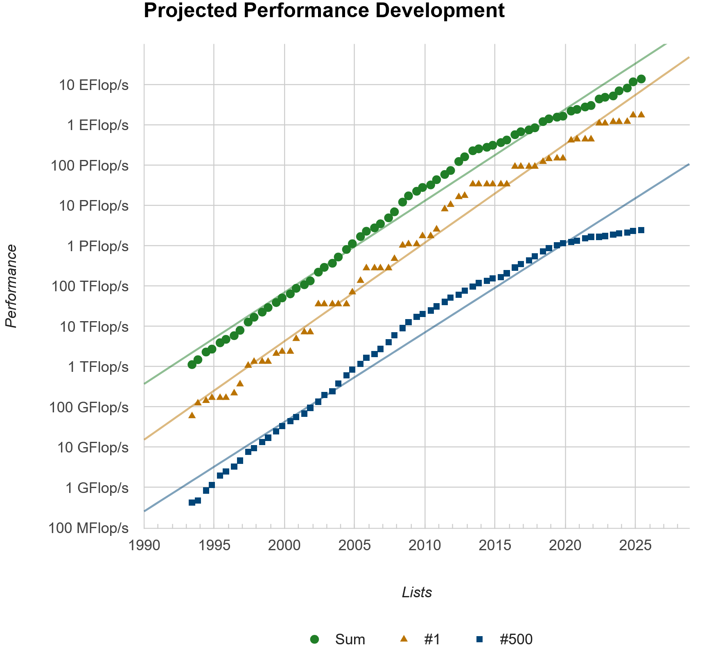
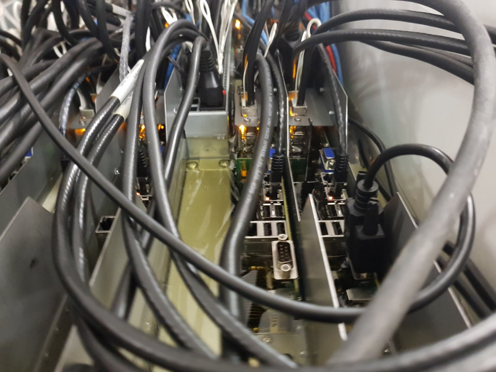
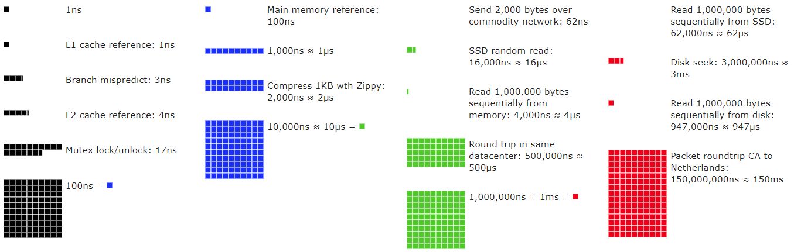
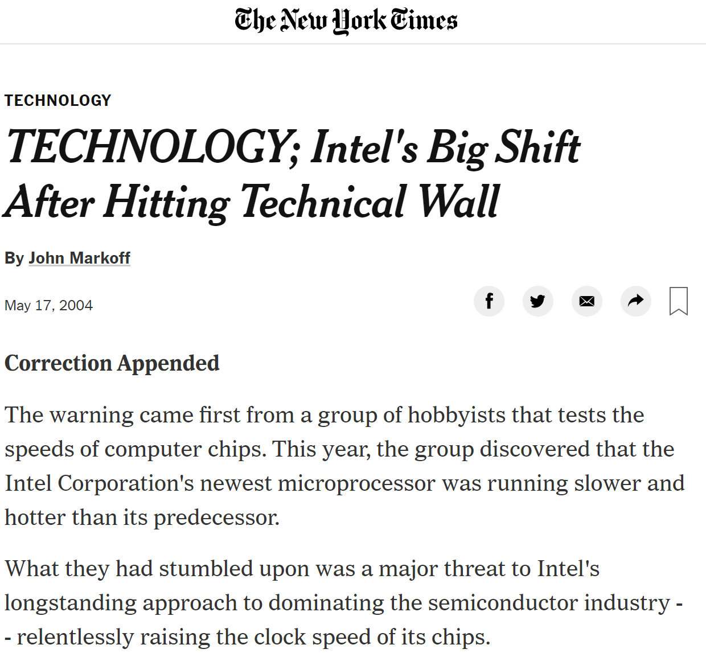
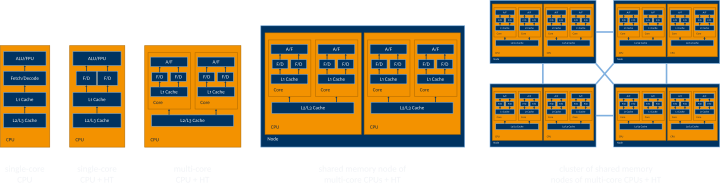
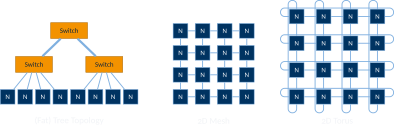
lstopo)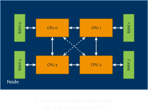
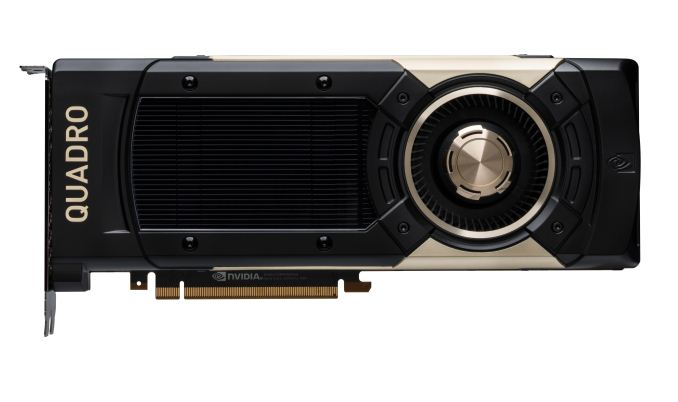
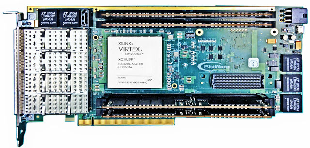
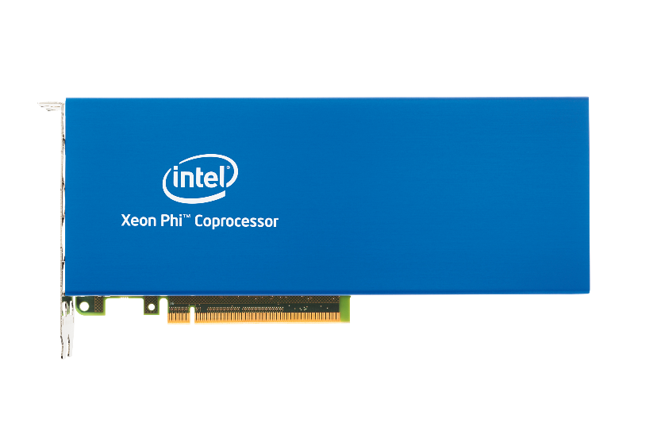
LCC3 (2011, 96 cores)
LEO5 (2023, 4032 cores)
MUSICA, Austria (84,480 cores)
El Capitan, Livermore, CA, USA (1,051,392 CPU cores)
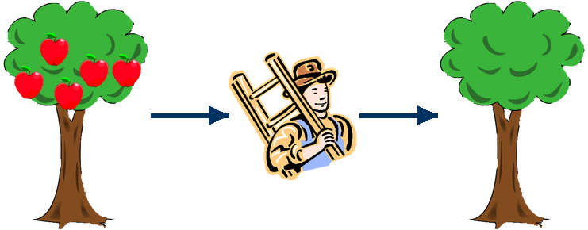
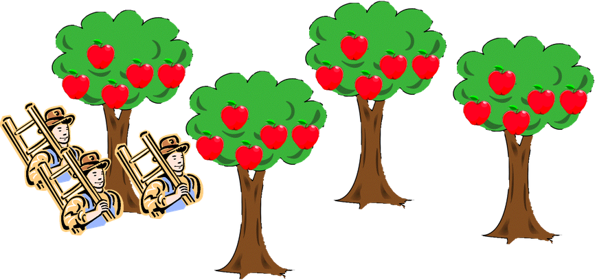
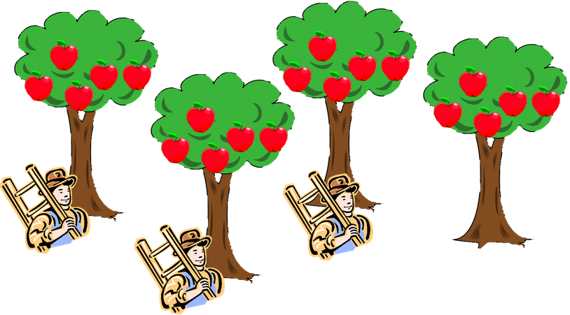
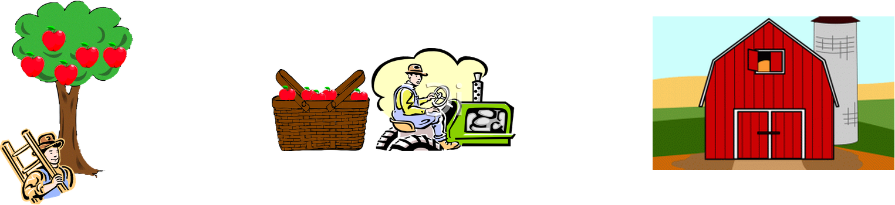
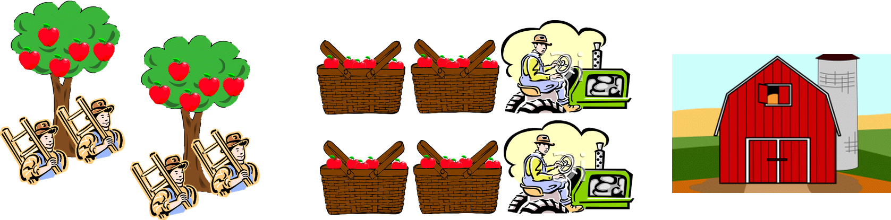
| Single Data | Multiple Data | |
|---|---|---|
| Single Instruction | Single Instruction Single Data (SISD) | Single Instruction Multiple Data (SIMD) |
| Multiple Instruction | Multiple Instruction Single Data (MISD) | Multiple Instruction Multiple Data (MIMD) |
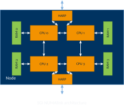
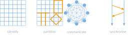
703308 VO High-Performance Computing — Motivation & Crash Course